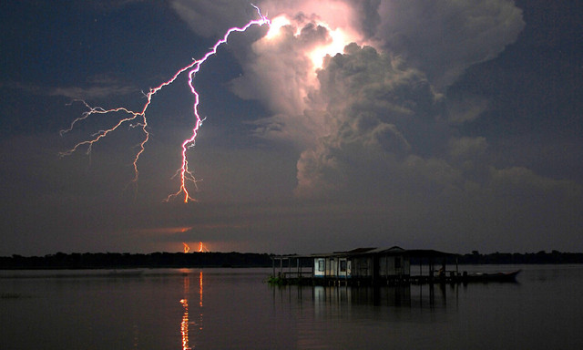

很多人对于下雨天打雷的时候都会有很大的畏惧的心理，听到这样的声音或者是看到电闪时候，都感觉危险就近在自己的眼前。人们对于这种自然的“超能力”都很害怕，生怕这样的事情会突然就降临在自己的身上；其实之所以人们对于这样的事情这么的害怕，就是因为对于未知的恐惧，再加上电这种东西本身就是非常的危险，更何况还是这么强大的电力，难免都会有人对于这样的事情感到非常的害怕了。
对于一些害怕打雷的人来说，一旦是出现了打雷的事情，无论是在屋外还是在屋内，对于这种害怕都是没有办法去除的，除非是完全的不呆在这样的环境当中，不会看到电闪，也不会听到雷鸣。一般来说，打雷的时候也并不会长，一般只有在夏天的时候才会有很多的雷雨天气出现，在其他的季节当中，这样的事情并不会频繁的出现，如果说一个地方常年都遭受雷击的话，那么这个地方可能是有什么“问题”了吧。大部分的人并不相信在一个地方经常会有电闪雷鸣的场景出现，但是这样的事情就是在委内瑞拉的一个地方出现了，在这里纪录着世界上闪电发生的频率最高的纪录，每分钟出现的闪电的次数多达几十次，而这个闪电也拥有着自己专属的名称——卡塔通博闪电。为什么会有这样的地方出现呢？一分钟的时间就会有几十道闪电出现，这样的事情让人们几乎不敢想象，但是就是这样不可思议的事情就是在现实生活当中出现了。接下来就让我们好好的了解一些这个地方。
据了解，在这个闪电经常会降临的地方有着一个，整个南美洲当中最大的湖泊——马拉开波湖，或许是因为有着一个非常特殊的地理环境，又或者是其他的一些原因，总之在这里一年当中大概有260天的时间都会有电闪雷鸣在这里出现。一般来说，像是这样的一个地方应当就不会有人居住了，但是让人没有想到的是，在这个地方恰恰就是出现了一个村庄。这个村落名叫孔古米拉尔多村，人们都生活在这样的电闪雷鸣当中；因为这里经常会出现闪电，频繁到这里每个小时的时间当中，甚至都能够有几千次的闪电出现；如果说有害怕闪电的人在这里生活的话，估计完全不能待下去；不过在这里没有人会害怕闪电，因为人们已经完全的习惯了闪电的存在。
我们都知道，一旦是闪电出现的话，尤其是一些巨大的闪电，就一定会有巨大轰鸣的雷声出现，但是在这里却偏偏的出现了这样奇怪的事情；即使是再大的闪电，在这里完全不会有任何的雷声出现，这样的现象让人们都非常的惊奇，但是这里确实是如此。有很多人并不害怕闪电，但是一听到雷声的时候就会感觉非常的恐怖，如果是生活在这样的一个地方的话，想必对于那些人也是非常值得高兴的一件事情了，不过这样的事情对于害怕闪电的人就不一样了。
因为这里经常会出现闪电的奇特的场景，而且还不会有声音，也不会打扰到人们的休息，所以这里还吸引了很多的游客专门前来，不过他们在来到这里的时候，只会在这里观赏这样的场景，并不会在这里居住，毕竟闪电并不是雷声，只是纸老虎，它的威力才是实实在在的存在的。虽然这里常年都是生活在高危的环境当中，不过这里的闪电也给他们带来过安全的生活；据说，曾经在这里，英国和西班牙的军队先后入侵这里，不过却并没有成功，而成功在阻止了这些军队的就是闪电。

生活在孔古米拉尔多村的人们，完全的适应了闪电和他们一起生活的日子，如果说这样的闪电突然消失的话，他们还会感觉到非常的不安；在2010年的时候，因为这里长期的干旱，在一段时间当中，这里的闪电曾经消失了很长的时间，也就是在这段时间当中，居住在当地的人们都陷入到了深深的焦虑当中，而当这里重新的出现了闪电之后，人们才终于放下心来。
据了解，在孔古米拉尔多村出现闪电的事情，已经有一个多世纪的时间了，因为闪电的出现，让这个本来没有人关注的小村落，也成为了很多游客的必去之地，人而生活在当地的人们也专门为游客的观赏修建了很多的建筑。虽然这样的奇特的景象非常的有意思，不过在这些事情的背后也应当有着一个原因才对；我们都知道，闪电之所以会出现，就是因为两个不同的电极出现了碰撞，所以才会有闪电的出现，不过这样的事情并不会 如此频繁的发现，究竟是什么样的原因才有了这样的现象，也一直都是人们非常疑惑的问题。有人说这里之所以会如此的频繁，是因为加勒比海的暖风和安第斯山脉的冷风的相遇，所以才会有这样的事情出现；不过也有人表示，这里之所以会频繁的出现闪电，实际上是因为在这里的一些沼泽的影响。